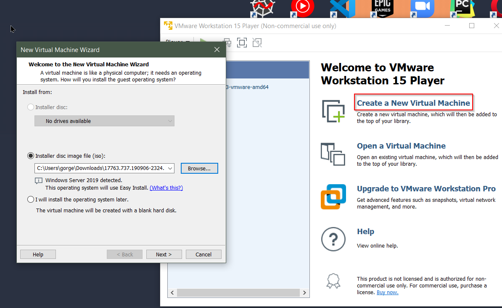

create new virtual machine then choose your ISO we are doing that for Windows Server 2019 so this should be SERVER_EVAL.ISO like that.

click next

and say yes. Then choose location you want to install and say next

next

make sure highlighted section is unticked.
say finish.

edit virtual machine settings then remove floppy completely.

everything seems fine.
say OK and start machine
press a key
rest of it just is classic windows installation.

make sure that is standart evaluation with desktop. and then custom installation

New

Apply and say yes.
and after completion

wait for that.
set your password which is for me it's P@$$w0rd!

click highlighted.
let's install vmware tools because we have issue about full screening.
For that click player > manage > install vmware tools
then it will displayed a dvd notification click that and run setup and install in complete mode
now let's change computer's name and then restart it.
we will give name like HYDRA-DC because this is a domain controller
type "Computer" to search bar and you'll find necessary field for that.
Now let's set up a domain controller through server manager.


after that again click next

in here tick Active Directory Domain Services.
after that say "Add Features" then Active Directory Domain Services will be ticked. And say next after that. And then just next next install.
After installation

click here
and say "Promote this server to a domain controller."
After that

after that we want to give a password to this.

next - next and screen where you should be this but we need to wait to load then we can see NETBIOS domain name.


remember ntds.dit file. Go ahead hit next.

hit next.

wait to load. And say install. once this is installed it'll reboot the machine.

we can see that now we have a domain called marvel.
Windows server 2019 password: P@$$w0rd